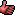

Wiki Development/Archive
Existing Enhancements
These are extras we've added to the UseModWiki Perl script:
Edit Page Extensions
- A Cancel button next to the Save button leads back to the page the edit link was clicked on. Some people are more comfortable with being able to actively cancel an operation instead of simply bailing out by clicking their browser's Back button.
- Links to the Wiki Markup page and a direct link to the Sandbox page along with the request to use that, not the currently open page, for test edits. (The Sandbox link isn't displayed while editing the Sandbox page itself, of course.)
Complex History & Diffs
The [Tavi-style history patch] gives more control over diffs. Since they are now called froma form button, this should prevent crawlers from calling a thousand and one diffs and go some way toward protecting the server.
Mychaeel: Very nice.  Now what I'd like to see is the diff output properly aligned like the rest of the page. 
Mychaeel: The diff output always says "Revision xy [the current one] not available, using current revision instead" if you select the latest revision for comparison. That error message doesn't really hurt since it has no effect on the output, but it's still a bit confusing. Is there a way to remove it?
New Markup Parser
See Wookee for more on this & all the markup elements added to UseModWiki.
Slashed Addresses
Mychaeel: Unreal Wiki pages are now preferably addressed via http://wiki.beyondunreal.com/wiki/HomePage, not .../wiki?HomePage (note the slash in place of the question mark). It just looks spiffier and matches the way images are addressed (see below).
Images
See Wiki Markup or Wookee/Changes.
Mychaeel: I've eventually changed the instructions for inserting an uploaded image in a page to clarify them a bit and (while I was at it) added a note about uploading multiple images at a time (it might not be obvious that this is possible).
Skins
Choose a header file and stylesheet on the user preferences page. See Project Skins for full details.
Discussion
Layout
Note for Aedis – the discussion you started here on layout has been shunted to Guidelines On General Style. Please delete this text when you see it. – Tarquin
CVS
Mychaeel: See 117134 – I'm suggesting we put the Wiki-related scripts and styles (and other files – not the database itself of course) in a CVS repository.
Mychaeel: See CVS/Wiki for information on the CVS repository the Unreal Wiki files reside in and how to use it.
InterWiki
Tarquin: I think I'll take a look at installing InterWiki, so we can easily and amusingly link to pages like [this one]. 
Tarquin: InterWiki is done. Need to be a bit more graceful when a non-existing prefix is used. An idea: How about a prefix Forum:12345678 to link to threads on BuF?
Mychaeel: Very nice idea. I'd call it [[Thread:8154711]] though.
Tarquin: Cool. Can you do it? Just add the token & URL prefix to intermap.txt in wiki-ext
Mychaeel: Done, and I've also added support for using an asterisk (*) in the InterWiki URLs as a placeholder for the page name. (If no asterisk is present, the page name is appended to the URL as before.) I needed that feature for the Posting:... prefix (the posting ID appears twice in the URL).
Comments: on Comments sections
Birelli: I think a "Comments" section at the bottom of every page makes sense. Any time someone makes a change they can put a small heading on it for the RecentChanges page, but a solid long-lasting record of why people did things, not just the (diffs) listings, would be a good idea. It doesn't need to be done proactively, just every time someone feels the need to comment, they should make a comments section for the page.
Mychaeel: Why would somebody want to clutter pages with who added or changed what?
Enhanced Diffs
Mychaeel: See 123753.
Mychaeel: Your comments are needed! See 1365990.
Mychaeel: Well, the new diff is up (obviously, since a couple of days already). Apart from some occasional tweaking on my part, it's just how I figured it to be. I've pimped this feature over at http://www.usemod.com/cgi-bin/wiki.pl?WikiSuggestions/ContextDiff, but it hasn't aroused any interest or even just comments yet.
Free Links
Mychaeel: I'd like to restrict the set of valid characters for free links to the following: Letters, digits, dashes, underscores, dots, spaces ([-\w. ]).
Tarquin: So throwing out comma, parentheses, apostrophe. from [-,.()' _0-9A-Za-z] to [-. _0-9A-Za-z]. Any particular reason? Do any page names currently use () apart from the KOTH mapping page?
Mychaeel: It's an attempt to keep free links somewhat as canonical as the usual WikiLinks.
Online Users
Mychaeel: I've just coded a patch that would allow us to display a list of users that are currently browsing the Wiki, along the lines of what's displayed at the bottom of the BuF main page.
...only I don't quite know yet where to put that information. Directly below the ad banner? Under the footer link block? Or even in the page header, in a small font?
Tarquin: how about on Recent Changes?
Mychaeel: Anyway... where?
Tarquin: Generate a 2nd section, below the changes list == Users browsing the wiki == and a bullet list.
Mychaeel: Hmm. I'd like it better if it was more along the lines of what those forums do, and part of the general page browsing template too.
EntropicLqd: That list could get fairly long. Might be better to simply place it on a seperate page - it seems worthy of it. I guess it depends how many concurrent users we typically see.
Mychaeel: I actually doubt that this list will get too long at any given time. Well, we'll see. It's been added at the bottom of every page now.
Timed Diffs
Mychaeel: I've applied a patch to wiki.cgi (on top of TaviStyleHistory) that allows for timed diffs: The revision and diffrevision script parameters take Unix timestamps prefixed with "t" and internally translate them into the revision number that was effective at that time.
- First and foremost, I plan to use this feature as part of the Wiki Integration/Browser Sidebar's pending "Bookmark" feature: A flag next to the bookmarks tells when a document has changed since your last visit, and clicking that flag takes you to a diff output of all changes since your last visit.
- The same could be done for the Recent Changes output.
Mychaeel: Check out the new Wiki Integration/Browser Sidebar – I've implemented that feature now, and it works like a charm (and even on Mozilla, Opera and Internet Explorer alike).
Mychaeel: For the RecentChangesJunkies, I've added a notification message to the sidebar telling how many pages have been updated or added since the user's last visit. ...with that, I'm out of (reasonable) ideas. Any more suggestions? Otherwise I'd go update Wiki Integration/Browser Sidebar and we could focus on Wiki Public Relations/Wiki Integration.
Mychaeel: Ah, I know.
- A couple of sidebar-related options on the "Preferences" page (unless tarquin objects). People might want to hide the Unreal Wiki logo on top because it takes valuable bookmark screen space away, or the "Unreal Wiki starting points" for the same reason.
- I have been thinking about abolishing the JavaScript part of the sidebar altogether (which manages communication between the main window and the sidebar for the "Add Page" button) in favor of setting cookies directly via CGI.
- I'd like to store the "last visited" date in the user's server-side profile rather than a client-side cookie. That'd allow users to roam different computers more freely. On the other hand, it requires the user profile file to be written every time a user accesses a page on the Wiki. Shouldn't be a problem in practice though, even though it might sound scary.
Tarquin: me? object? prefs for sidebar would be good. I'll eventually do a big clean-up of the prefs page. If Moo ever gets finished.
Mychaeel: Sidebar preferences are in. Next: Getting rid of JavaScript and "last visited" cookie.
Mychaeel: I have decided to keep the "last visited" cookie (instead of writing that information to the server-side user profile) because it allows people to take advantage of it without creating a profile in the first place. I've added support for it to the main Wiki (not just the sidebar), including a new "(last visit)" link next to the "(diff)" link on Recent Changes that displays all changes to a page since your last visit.
Accesskeys
Use ALT-S, P, or C on the edit page.
Graphik: Nice. I'm a keyboard-shortcut freak.